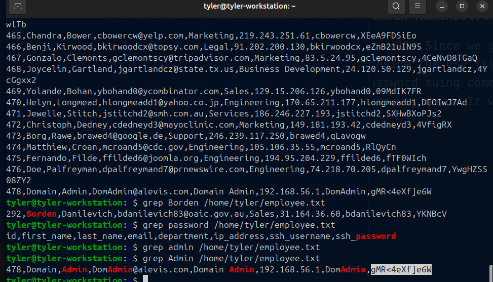

Blue Team Security: Final Intro to Networking Analysis CTF (Using WireShark)
1. What is the MAC Address of the attacker?
The first thing I did was to filter the connections in the display filter, so the most common protocols that an attack might be happening are http,tcp,udp,ftp etc. So after checking them, you see that there is something going on when we filter ftp.
There seems to be someone that requested an Employee csv file from the server. We know what IP it is from 192.168.56.103.
However, this is where the twist is, I intitally thought that this was a classic credential stuffing or FTP Data Exfiltration Attack but it turns out when I looked carefully this was actually a Man In the Middle Attack mainly because of the use of python in in the creation of the ftp server, it seems like a rouge service kind of attack where a victim was connecting to fake FTP server, and the fake FTP server is listening and also serving the file. So the Attacker's IP is actually 192.168.56.103 and because of this, the corresponding MAC address which is the destination address is actually 08:00:27:3d:27:5d.2. What is the type of attack which is taking place that allows the attacker to listen in on conversations between the central server and another host?
As we have discussed before, this is defintely a Main In The Middle Attack
3. What is the file which was downloaded from the central server?
We have also found the file that was downloaded because the fake FTP Server is serving the file to the victim. The file is "Alevis_Employee_Information_Chart.csv"
4. What department does Borden Danilevich work at?
Here is a bit tricky, we know that there the employee CSV file, all we have to do is access it and read it, since this is a CTF, I was sure the file was not going to be encrypted. In order to access it, we have to look at our TCP connections. FTP uses two separate TCP connections, one is the control connection which is on port 21, for commands like login, RETR,STOR. The other is a dynamic port , which is used to actually transfer the actual file data. This dynamic port number can be known if you follow the TCP Stream by clicking RETR request of the employee csv file.
This line, PORT 192,168,56,103,192,19. This is where the dynamic port is however in order to convert this into decimal. Since FTP protocol is old and textual — so it sends data port info as six comma-separated decimal numbers: PORT a,b,c,d,x,y You will use the formula (x * 256) + y. Which will be (192 * 256) + 19 = 49171. Then you can use the command "tcp.port == 49171" to see the data being transfered. Afterwards, follow the TCP stream from the first packet and you will get a huge list of plaintext data about employee information. Here you can create a text file and copy the data inside and use the 'grep' command use his name Borden to find what department he is in. You will realise that Borden Danilevich is in the Sales Department.
5. What is the SSH password of the Domain Administrator
The last question is relatively easy as well. Since we got the employee csv, our first bet was to find the passord inside the CSV file. So I just started using the "grep" command to find the password suing common terms like "Domain" , "Admin", or you can just scroll all the way down. It was quite easy to find the password is gMR<4eXf]e6W .
